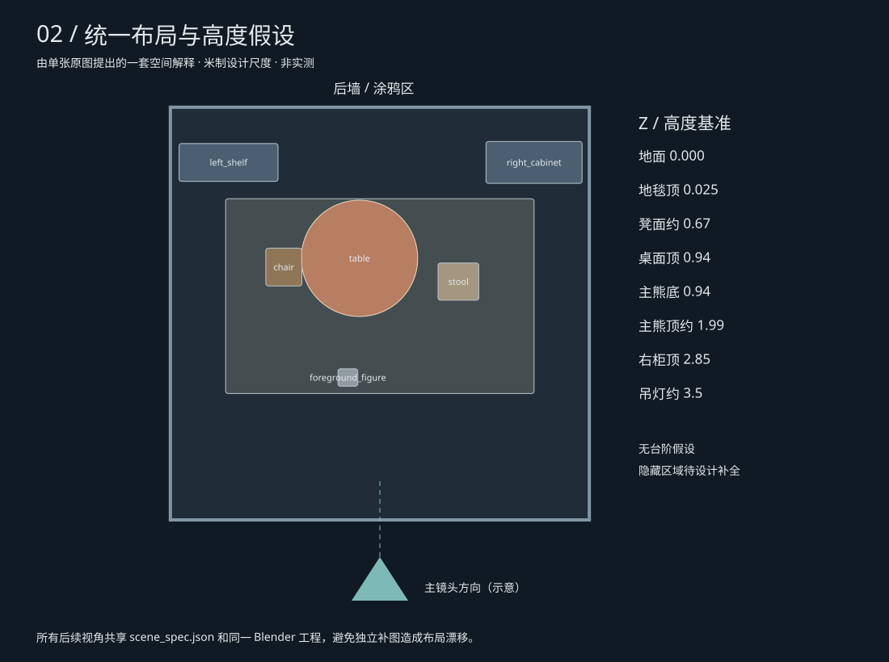
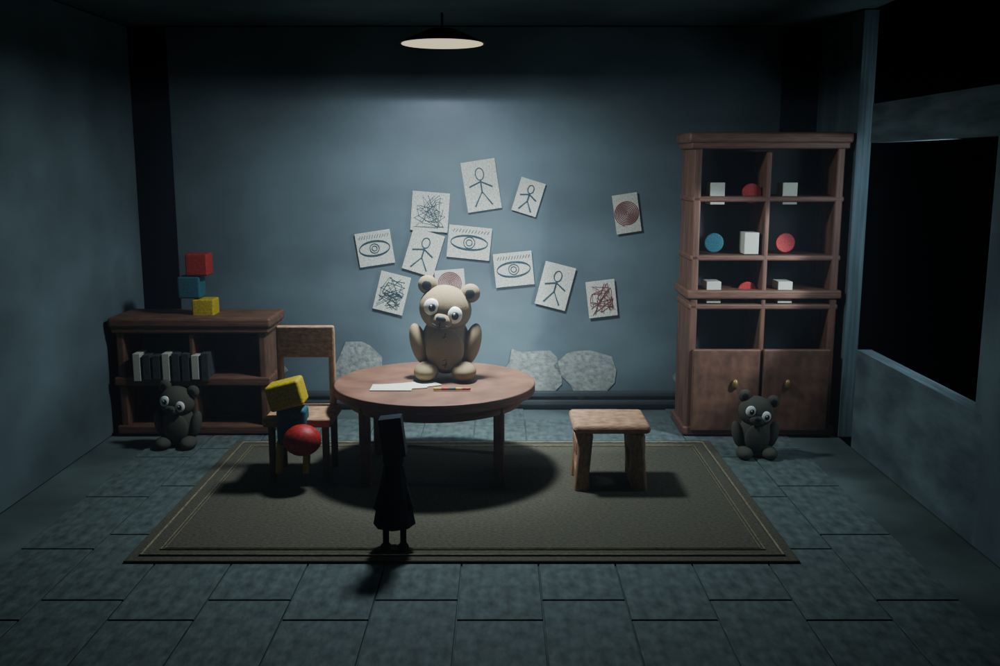
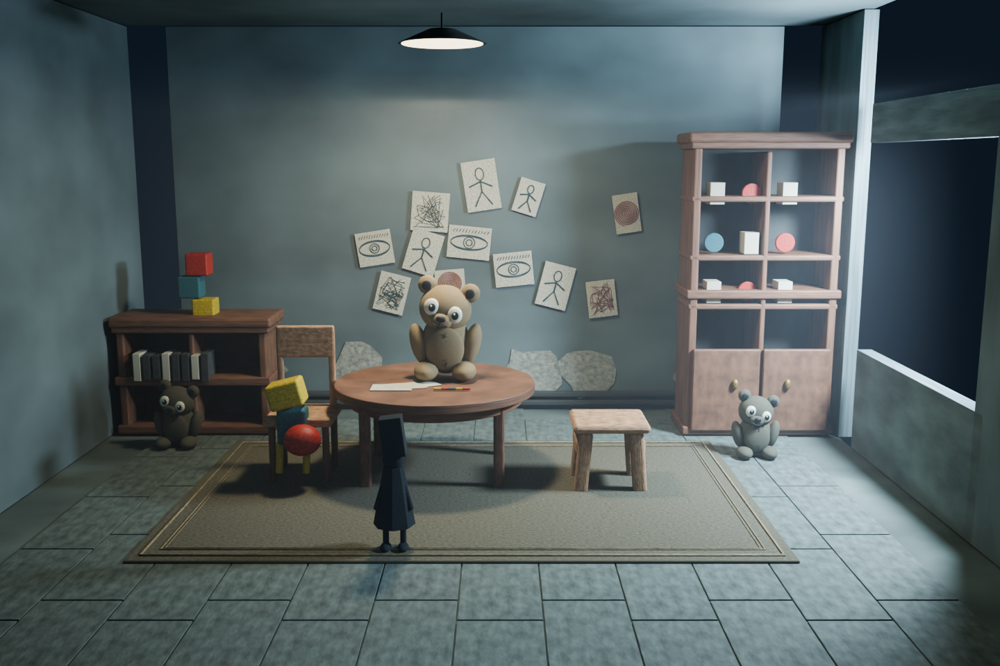
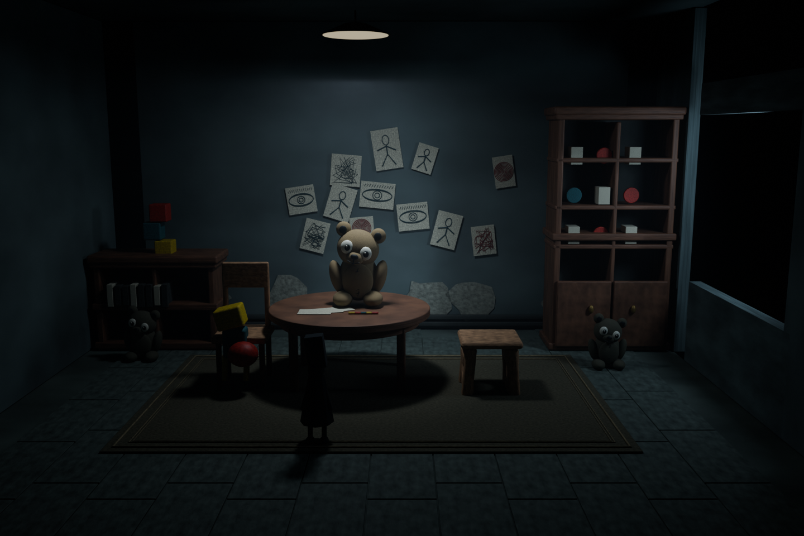
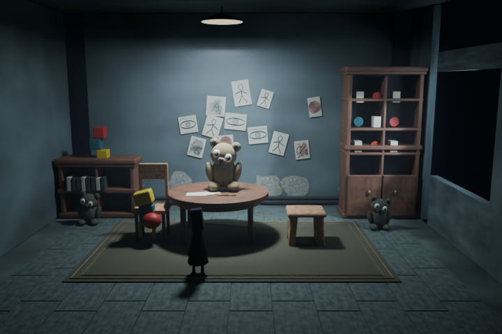

A PRACTICAL SCENE STUDY · 2026.11.09一张氛围图，逐步变成可检查的空间
所有白模、材质与多视角预览均由本机 Blender 实际渲染。尺寸是设计假设，角色与隐藏区域为程序化近似。
查看顺序：原图 → 布局 → 白模 → 材质与灯光 → 多视角。六个阶段均已完成，并已独立重开工程再次渲染。点击任何图片可放大查看。
01 / 分析参考

锁定圆桌、地毯、左右柜体和主熊的关系。未发现明确台阶依据；地面先设平面。阴影用于分析照明，不作为高差测量。
阅读分析记录02 / 布局与高差

这是制作开始时的布局草案。白模检查后，两侧柜体向外移动、吊灯上移、右柜加高；最终工程及 scene_as_built.json 记录实现结果。桌面顶与主熊底共享支撑高度。
初始布局假设 · 最终对象边界原图与本次原型 · 可切换比较

本次氛围原型：仍与原图有明显差异
03 / 白模与主镜头
验收重点是轮廓、遮挡和画面占比。简单形体用于明确关系，不代表角色或家具已完成。
04 / 模型与材质
代表件细化后再复制；程序化材质与纸面图案保存在工程中。角色采用近似造型，不是原游戏模型。
05 / 氛围与最终主视角
顶灯建立中心焦点，右侧窗光建立斜向层次。查看暗部可读性、桌面接触与材质区别。
灯光纠偏记录

V1 / 侧面照明过强，整体偏亮。
V2 / 压暗后主体可读性不足。V3 / 提高中心光池与局部斜光，保留周边暗部。此处保留失败版本，便于学习每次修改的动机。后期暗角仅用于展示；结构判断以白模与均匀照明图为准。
06 / 同一场景的八个视角
这些视角来自同一份三维几何，不是八次独立想象。反向和俯视会揭示原图未提供的设计假设；俯视剖切视角会隐藏屋顶与遮挡墙。
07 / 重开工程后再次渲染

在独立 Blender 进程中读取最终工程，重新输出 720 × 480 预览。已检查八个相机与外部图像依赖；未发现缺失贴图。对象数量仅作记录，不作为美术质量证明。